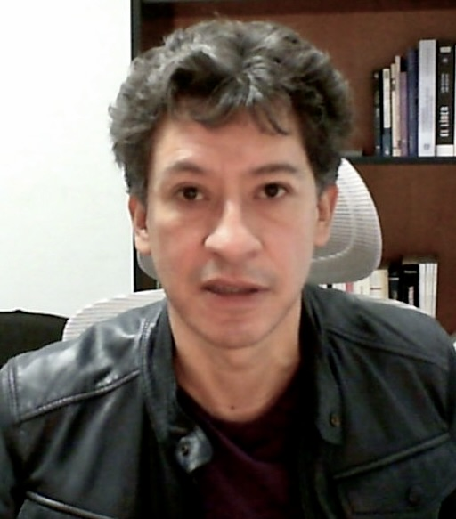

Escenarios Interactivos
Unidad 2
-
2.1. Axiomas de campo
Se muestra el funcionamiento de los axiomas de orden y campo posicionando puntos o valores en la recta real.
-
2.2. Caracterización del supremo
Se muestra cómo aplicar la caracterización del supremo a un conjunto específico. Posteriormente, se demuestra la equivalencia del supremo y la caracterización.
Unidad 3
-
3.1. Gráficas funciones pares e impares
Se aborda la relación entre las funciones pares e impares con sus respectivas simetrías. Se presentan dos ejemplos demostrativos.
-
3.2. Función par e impar
Se estudian las funciones pares e impares con sus respectivas definiciones algebraicas y operaciones entre ellas.
-
3.3. Gráfica de una función inyectiva
Se estudia el concepto de función inyectiva mediante un acercamiento geométrico y algebraico en rectas y parábolas.
-
3.4. Diagrama de una función inyectiva
Se estudia el concepto mediante diagramas de Venn y definición algebraica, además de la composición de funciones.
-
3.5. Gráfica de una función suprayectiva
Se estudia la sobreyectividad desde un enfoque geométrico-algebraico con ejemplos prácticos.
-
3.6. Diagrama de una función suprayectiva
Análisis de la sobreyectividad con diagramas de Venn y contraejemplos sobre la suma de funciones sobreyectivas.
-
3.7. Cuestionario sobre funciones, V1
Repaso de conceptos clave: funciones pares, impares, inyectivas, sobreyectivas y biyectivas.
Unidad 4
-
4.1. Monotonía completa diagramas
Definiciones de sucesiones crecientes, decrecientes y estrictamente monótonas mediante diagramas.
-
4.2. Límite de una sucesión proceso formal
Proceso formal ($\epsilon$-$N$) del límite de una sucesión de números reales generada aleatoriamente.
Unidad 5
-
5.1. Límite proceso intuitivo
Definición ($\epsilon$-$\delta$) desde una perspectiva geométrica intuitiva construyendo vecindades.
-
5.2. Límite proceso formal
Acercamiento geométrico y aritmético a la definición formal para el caso de una recta.
-
5.3. Límite con acotación de delta
Análisis geométrico y aritmético para el caso de una parábola acotando $\delta$.
Unidad 6
-
6.1. Continuidad
Análisis gráfico de discontinuidades de salto, evitables e infinitas en funciones a trozos.
-
6.2. Conjunto negativo
Estudio geométrico de las regiones donde una función toma valores negativos.
-
6.3. Teorema de conservación del signo
Visualización y demostración formal del teorema de conservación del signo.
-
6.4. Teorema del valor intermedio
Visualización del Teorema del Valor Intermedio, conjetura inicial y su demostración.
-
6.5. Contradicción con el supremo
Paso clave en la demostración por contradicción del Teorema del Valor Intermedio.
-
6.6. Teorema de Weierstrass
Visualización de valores máximos y mínimos acotados, formulación y demostración del teorema.
Unidad 7
-
7.1. Derivada
Acercamiento a la derivada mediante la recta tangente a la gráfica en un punto.
-
7.2. Teorema de Fermat
Visualización de puntos críticos, formulación de conjetura y demostración.
-
7.3. Teorema de Rolle
Interpretación geométrica, formulación y demostración del Teorema de Rolle.
-
7.4. Teorema del valor medio
Visualización, conjetura y demostración del Teorema del Valor Medio.
Unidad 8
-
8.1. Análisis de gráficas
Criterios de primera y segunda derivada para determinar picos, valles y concavidades.
-
8.2. Modelo de dieta
Aplicación del modelo diferencial: $W(n)=\frac{c}{40}+(W_{0}-\frac{c}{40})e^{-0.0052n}$
Fundamentación de los Escenarios Interactivos
Ver fundamentación teórica
La enseñanza de la matemática superior en los primeros semestres encierra diversas dificultades en la comprensión de conceptos y procesos, en particular en la demostración de teoremas.
Esta problemática ha sido reportada en la literatura especializada en la educación matemática, es de carácter internacional, por dar algunos ejemplos, respecto a la demostración Dawkins & Zazkis (2021) advirtieron que los estudiantes principiantes no siempre reconocen cuáles enunciados funcionan como hipótesis y cuáles como conclusiones ni cómo deben reutilizarse en una demostración, suelen justificar o aceptar una afirmación mediante intuiciones o evidencia empírica.
En ese sentido, Stylianides et al. (2024) señalaron que, los estudiantes novatos tienen la creencia de que para demostrar un teorema es suficiente hacerlo con ejemplos particulares; este obstáculo es catalogado como un hallazgo sólido en el área de la educación matemática.
Stavros (2014) encontró que muchos estudiantes, asumen la conclusión de una proposición para demostrar la proposición, es decir, usan lo que quieren demostrar.
Al respecto, Camacho et al. (2014) advierte que una de las causas de esta problemática es que los estudiantes no cuentan con ningún tipo de entrenamiento dirigido para realizar o elaborar demostraciones matemáticas.
Nosotros mismos hemos estudiado algunas dificultades frecuentes de los alumnos relacionadas con los aspectos lógicos fundamentales para las demostraciones, ver (Herrera et al., 2018; Herrera et al. 2019; Herrera y Rodríguez, 2025).
Para atender esta problemática desde esta perspectiva, las actividades que proponemos en este trabajo están sustentadas en elementos de la educación matemática que promueven un proceso de enseñanza-aprendizaje activo.
1. La Propuesta
La transición del pensamiento intuitivo al formal ha sido ampliamente estudiada en la educación matemática. Por un lado, Tall (1991) describe esta evolución mediante un modelo del desarrollo del pensamiento matemático, mientras que
Gueudet (2008) enfatiza que las dificultades y rupturas que experimenta el estudiante en la transición del pensamiento empírico y procedimental al pensamiento abstracto y la formalización no deben verse como un fracaso o un vacío educativo sino como un proceso de adaptación y un paso necesario para el estudio de la matemática superior.
En este sentido, la geometría y la visualización actúan como un puente para esta transición; al respecto, en el ámbito del Cálculo, Arcavi y Hadas (2000) indican que, la tecnología digital brinda la oportunidad de visualizar e interactuar con distintas representaciones de conceptos que previamente se analizaban con el uso de instrumentos estáticos.
Siguiendo esta línea de trabajo, en nuestra práctica cotidiana hemos incluido el uso de las tecnologías digitales, obteniendo resultados alentadores, en concordancia con Arcavi y Hadas (2000).
Por lo cual presentamos este proyecto a la comunidad matemática interesada, que consiste en el diseñado de una serie de 26 escenarios didácticos mediados por las tecnologías digitales, que se fundamentan en el aprendizaje activo, la visualización dinámica en tiempo real y la interactividad; sin olvidar lo que Arcavi y Hadas (2000) advierten, a saber,
las herramientas tecnológicas en sí mismas no producen cambios sustanciales en el aprendizaje del estudiante, no generan conocimiento si no son utilizadas dentro de un marco didáctico que brinde apoyo para el desarrollo de actividades que le permitan al estudiante construir conceptos matemáticos.
2. Principios de Diseño
Los escenarios interactivos que presentamos están en correspondencia con el temario de la Facultad de Ciencias de la UNAM, ver (Facultad de Ciencias, 2023) y se elaboraron con base en los siguientes principios de diseño:
- Diseño en tres etapas: Exploración (intuición-geométrica), Concepto (cuestionario-teórico) y Demostración Matemática (validación-formal).
- Exploración dinámica: Manipulación directa de parámetros, por ejemplo ($\epsilon$, $\delta$, puntos en la recta, puntos de control en gráficas, flechas en diagramas, etc.) con retroalimentación inmediata.
- Interacción activa: Las tres etapas son 100% interactivas con el alumno, lo que fomenta la visualización de conceptos y la demostración de teoremas mediante un proceso de aprendizaje activo.
- Conjetura previa: Espacios de experimentación donde el alumno plantea hipótesis y formula conjeturas antes de enfrentarse al enunciado de un teorema y su demostración formal.
- Representaciones múltiples: Vinculación simultánea entre el registro gráfico, el registro tabular y el registro numérico.
3. Impacto en el Aprendizaje a Distancia
La contribución de este proyecto es el desarrollo de material didáctico digital interactivo diseñado para construir conceptos matemáticos, fomenta el autoaprendizaje guiado y ayuda a sustituir la enseñanza pasiva con la experimentación activa de los teoremas principales de Cálculo I.
Referencias
- Arcavi, A., y Hadas, N. (2000). Computer mediated learning: An example or approach. International Journal of Computer for Mathematical Learning, 5(1), 1-9. https://doi.org/10.1007/BF01093726
- Camacho, V., Sánchez Pozos, J. J. y Zubieta, G. (2014). Los estudiantes de ciencias, ¿pueden reconocer los argumentos lógicos involucrados en una demostración?. Enseñanza de las Ciencias, 32(1), 117–138. https://doi.org/10.5565/rev/ensciencias.983
- Dawkins, P. C. y Zazkis, D. (2021). Using moment-by-moment reading protocols to understand students’ processes of reading mathematical proofs. Journal of Research in Science and Education in Mathematics, 52(5), 510–538. https://doi.org/10.5951/jresematheduc-2020-0151
- Facultad de Ciencias (2023). Programa de estudios de la asignatura de Cálculo Dif e Int I. https://www.fciencias.unam.mx/sites/default/files/temario/91.pdf
- Gueudet, G. (2008). Investigating the secondary–tertiary transition. Journal of Educational Studies in Mathematics, 67 , 237–254. https://doi.org/10.1007/s10649-007-9100-6
- Herrera, G., Rivera, A. y Aguirre, K. (2019). Calculus students’ difficulties with logical reasoning. In U. T. Jankvist, M. van den Heuvel-Panhuizen, & M. Veldhuis (Eds.), Proceedings of the Eleventh Congress of the European Society for Research in Mathematics Education (pp. 2518- 2525). Utrecht, the Netherlands: Freudenthal Group & Freudenthal Institute, Utrecht University and ERME. https://hal.archives-ouvertes.fr/hal-02422637
- Herrera, G., Rivera, A. y Aguirre, K. (2018). Difficulties of logical nature identified in the students in the first course of Calculus. In T.E. Hodges, G. J. Roy, & A. M. Tyminski, (Eds.), Proceedings of the 40th annual meeting of the North American Chapter of the International Group for the Psychology of Mathematics Education (pp. 600-607). Greenville, SC: University of South Carolina & Clemson University. http://www.pmena.org/pmenaproceedings/PMENA%2040%202018%20Proceedings.pdf
- Herrera-Alva, J. G. y Rodríguez-Espinosa, A. (2025). Trayectoria hipotética de aprendi-zaje sobre la inferencia lógica negación del antecedente. Enseñanza de las Ciencias, 43(1), 119-138. https://doi.org/10.5565/rev/ensciencias.6046
- Stavros, G. (2014). Common errors and misconceptions in mathematical proving by education undergraduates. IUMPST: The Journal, 1, 1-8. https://doi.org/10.1111/iumpst.12018
- Stylianides, A., J. Stylianides, G.J. (2018). Addressing Key and Persistent Problems of Students’ Learning: The Case of Proof. In: Stylianides, A., Harel, G. (eds) Advances in Mathematics Education Research on Proof and Proving. ICME-13 Monographs. Springer, Cham. https://doi.org/10.1007/978-3-319-70996-3_7
- Stylianides, G.J., Stylianides, A.J. y Moutsios-Rentzos, A. (2024). Proof and proving in school and university mathematics education research: a systematic review. ZDM–Mathematics Education, 56, 47–59. https://doi.org/10.1007/s11858-023-01518-y
Investigadores

Gabriel Herrera
Es egresado de la Licenciatura en Matemáticas de la Facultad de Ciencias de la UNAM. Obtuvo el grado de Maestro en Ciencias en el Instituto de Matemáticas de la UNAM (IMATE), en el área de Topología General, y obtuvo el Doctorado en Ciencias, en el área de Matemática Educativa, en el Centro de Investigación y de Estudios Avanzados del IPN (CINVESTAV).
Pertenece al Sistema Nacional de Investigadores (SNII) del SECIHTI. Ha sido profesor de asignatura en la Facultad de Ciencias de la UNAM y ha impartido cursos de posgrado (Maestría y Doctorado) en el Centro de Investigación en Ciencia Aplicada y Tecnología Avanzada del IPN (CICATA).
Actualmente forma parte del Departamento de Matemáticas de la Facultad de Ciencias de la UNAM, donde se desempeña como Profesor Titular de Asignatura Definitivo.
Realiza una estancia posdoctoral en el Centro de Investigación en Ciencia Aplicada y Tecnología Avanzada del IPN (CICATA).
Ha participado como ponente en congresos internacionales especializados en Educación Matemática, entre ellos destacan eventos organizados por: European Society for Research in Mathematics Education (ERME), Implementation and Replication Studies in Mathematics Education (IRME) & the International Group for the Psychology of Mathematics Education of the North American (PME-NA). Asimismo, cuenta con publicaciones en revistas especializadas de circulación internacional.
David Meza
Coordinador de la Licenciatura en Matemáticas de la Facultad de Ciencias de la UNAM. Es egresado de la Licenciatura en Matemáticas, obtuvo el grado de Maestro en Ciencias en [...] y obtuvo del Doctorado en Ciencias Matemáticas [...]. Su investigación [...]. Ha participado en conferencias y talleres sobre [...] y divulgación científica [...]